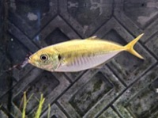

まあじ（真鯵）の漁獲量
いちばん多くとれる都道府県
まあじが日本でいちばん多くとれるのは長崎県です。4万2,567 tで、全国（9万2,280 t）の46%を占めます。

| 順位 | 都道府県 | 漁獲量 | 全国に占める割合 |
|---|---|---|---|
| 1位 | 長崎県 | 4万2,567 t | 46% |
| 2位 | 島根県 | 1万1,298 t | 12% |
| 3位 | 宮崎県 | 4,314 t | 4.7% |
この数字について
- 分類：鯵の仲間
- 全国の漁獲量：9万2,280 t
- この数字が表すもの：漁獲量（海でとれた重さ。養殖は含みません）
- 調査：海面漁業生産統計調査（海面漁業） 令和5年
- 35県分を調査（調査していない県は順位に入りません）